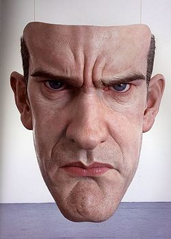
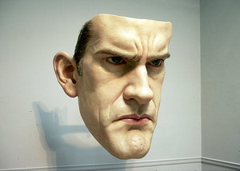

Ron Mueck
From The Giant: The Definitive Obey Giant Site
From Wikipedia:
Ron Mueck (born 1958) is an Australian hyperrealist sculptor working in Great Britain.
Mueck's early career was as a model maker and puppeteer for children's television and films, notably the film Labyrinth for which he also contributed the voice of Ludo.
Mueck moved on to establish his own company in London, making photo-realistic props and animatronics for the advertising industry. Although highly detailed, these props were usually designed to be photographed from one specific angle hiding the mess of construction seen from the other side. Mueck increasingly wanted to produce realistic sculptures which looked perfect from all angles.
In 1996 Mueck transitioned to fine art collaborating with his mother-in-law, Paula Rego, to produce small figure as part of a tableau she was showing at the Hayward Gallery. Rego introduced him to Charles Saatchi who was immediately impressed and started to collect and commission work. This led to the piece which made Mueck's name, "Dead Dad," being included in the Sensation show at the Royal Academy the following year. "Dead Dad" is a rather haunting silicone and mixed media sculpture of the corpse of Mueck's father reduced to about two thirds of its natural scale. It is the only work of Mueck's that uses his own hair for the finished product.
Mueck's sculptures faithfully reproduce the minute detail of the human body, but play with scale to produce disconcertingly jarring visual images. His five metre high sculpture Boy 1999 was a feature in the Millennium Dome and later exhibited in the Venice Biennale.
In 2002 his sculpture "Pregnant Woman" was purchased by the National Gallery of Australia for AU$800,000.
Mueck's 1997 work "Mask" (158 x 153 x 124 cm / 62 x 60 x 49 in) appears to have served as the model for Shepard Fairey's 1999 print Big Brother, 1999's Big Brother Offset, and 2004's Big Brother Paint-by-Number.
|  |
 |

{kind=link}
{kind=link}
{kind=link}
© Copyright |
|---|
| This page contains an image or images of drawings, paintings, photographs, prints, or other two-dimensional works of art, for which the copyright is presumably owned by either the artist who produced the image, the person who commissioned the work, or the heirs thereof. It is believed that the use of low-resolution images of works of art for critical commentary on the work in question, the artistic genre or technique of the work of art, or the school to which the artist belongs on the English-language website thegiant.org, hosted on servers in the United States, qualifies as fair use under United States copyright law. |